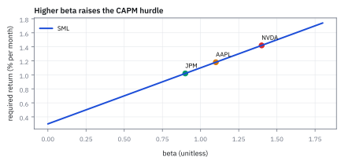
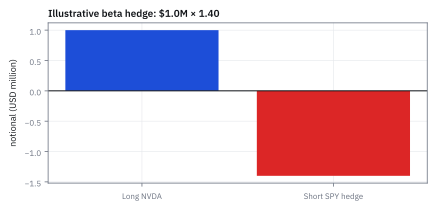
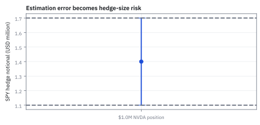

15.2 Capital Asset Pricing Model (CAPM) — Beta, Alpha, and Required Return
ผลตอบแทนที่ได้จากการเกาะตลาดซื้อได้ในราคาถูก ต้องหักส่วนนั้นออกก่อน ส่วนที่เหลือจึงมีสิทธิ์ถูกเรียกว่าฝีมือ
ปีที่ดัชนี S&P 500 ขึ้น 10% และเงินฝากระยะสั้นให้ 2% ผู้จัดการ A ทำได้ 6% ผู้จัดการ B ทำได้ 12% พอร์ตของ A มี beta 0.5 ของ B มี beta 1.5 กรรมการเสนอให้โบนัสฝีมือกับ B เพราะทำได้สองเท่าของ A ถูกไหม?
ลองตอบก่อนเปิดเฉลย
ไม่ถูก ใครก็ได้ที่ยืมเงินที่ 2% มาซื้อกองทุนดัชนี 1.5 เท่าของทุน จะได้ $1.5(10\%)-0.5(2\%)=14\%$ โดยไม่ต้องเลือกหุ้นเลย B จึงทำได้ต่ำกว่าของที่ลอกได้ฟรี 2 จุด ส่วน A ได้ 6% เท่ากับของที่ลอกได้ด้วย beta 0.5 พอดี alpha ของ A คือ 0 และของ B คือ −2% ถ้าจะให้โบนัสใคร ต้องเป็น A ก่อน B
สิ่งที่เราจะสร้าง
15.1 ให้เครื่องมือลากเส้นผ่านข้อมูล หน้านี้ใช้เส้นเดียวกันกับผลตอบแทนส่วนเกินของหุ้นและตลาด slope กลายเป็น beta ที่บอกว่าหุ้นเกาะตลาดแค่ไหน intercept กลายเป็น alpha ที่บอกว่าเหลืออะไรหลังหักส่วนที่ซื้อได้ถูก ๆ แล้ว
เราจะแก้โจทย์สองผู้จัดการด้วยมือ ตั้ง regression แล้วแยกให้เห็นว่าบรรทัดไหนเป็นพีชคณิต บรรทัดไหนเป็นข้อสมมติของ CAPM พิสูจน์ว่าทำไมตัววัดความเสี่ยงต้องเป็น beta ไม่ใช่ SD จากนั้นใช้กับหุ้นจริงหนึ่งเดือน กับห้าเดือนของ 15.1 ถามว่า alpha เป็นโชคหรือฝีมือ และจบที่การตั้งราคาโครงการลงทุนหนึ่งชิ้น ซึ่งเป็นจุดที่คนใช้เส้นผิดบ่อยที่สุด
ศัพท์ที่ใช้ในหัวข้อนี้
- Capital Asset Pricing Model (CAPM)
- model ที่บอกว่าผลตอบแทนคาดหวังส่วนเกินของสินทรัพย์ใด ๆ เท่ากับ beta คูณผลตอบแทนคาดหวังส่วนเกินของตลาด ใช้ตั้งผลตอบแทนขั้นต่ำและแยก exposure ต่อตลาดออกจากส่วนที่เหลือ
- Excess return
- ผลตอบแทนลบผลตอบแทนของเงินสดช่วงเดียวกัน ($R-R_f$) ใช้วัดว่าการรับความเสี่ยงให้อะไรเพิ่มจากการนั่งถือเงินสดเฉย ๆ
- Beta
- slope ของ excess return ของสินทรัพย์บน excess return ของตลาด คือ covariance กับตลาดหารด้วย variance ของตลาด ใช้ตั้งขนาด hedge และวัดความเสี่ยงส่วนที่ตลาดจ่ายค่าตอบแทนให้
- Alpha
- intercept ของ regression เดียวกัน คือผลตอบแทนส่วนเกินที่เหลือหลังหักส่วนที่ beta อธิบาย ใช้ตั้งคำถามว่ามีฝีมือหรือไม่ แต่ตัวเลขเดียวยังไม่ใช่หลักฐาน
- Security Market Line (SML)
- เส้นตรงระหว่างผลตอบแทนคาดหวังกับ beta ตาม CAPM ใช้กับสินทรัพย์ทุกตัว ไม่ว่าจะเป็นหุ้นเดี่ยวหรือพอร์ต
- Capital Market Line (CML)
- เส้นตรงระหว่างผลตอบแทนคาดหวังกับ SD ที่ลากจากเงินสดผ่านพอร์ตตลาด ใช้ได้เฉพาะพอร์ตที่ผสมเงินสดกับตลาดเท่านั้น
- Idiosyncratic risk
- ส่วนของความผันผวนที่ไม่เกี่ยวกับตลาด ($\varepsilon$ ใน regression) กระจายหายได้เมื่อถือหลายตัว CAPM จึงไม่จ่ายค่าตอบแทนให้ ส่วนที่เกี่ยวกับตลาดเรียก systematic risk
สัญลักษณ์และหน่วย
| สัญลักษณ์ | ความหมาย | หน่วย |
|---|---|---|
| $R_i,\ R_m,\ R_f$ | ผลตอบแทนของสินทรัพย์ $i$ ของตลาด และของเงินสด ในช่วงเดียวกัน | % ต่อช่วง |
| $\mu_i,\ \mu_m$ | ผลตอบแทนคาดหวัง $\mathbb E[R_i]$ และ $\mathbb E[R_m]$ | % ต่อช่วง |
| $\beta_i,\ \alpha_i$ | slope และ intercept ของ regression บน excess return | ไม่มีหน่วย และ % ต่อช่วง |
| $\varepsilon_i$ | ส่วนที่ตลาดอธิบายไม่ได้ | % ต่อช่วง |
| $\sigma_m,\ \sigma_\varepsilon,\ \sigma_{im}$ | SD ของตลาด SD ของ $\varepsilon$ และ covariance ของ $R_i$ กับ $R_m$ | % และ %² |
| $N_h$ | ขนาดที่ต้อง short ดัชนีเพื่อ hedge | USD |
| $P,\ X$ | ราคาวันนี้ และเงินที่สินทรัพย์จ่ายในอีกหนึ่งปี | USD |
| $\lambda$ | ราคาต่อหนึ่งหน่วย covariance กับตลาด $(\mu_m-R_f)/\sigma_m^2$ | ต่อ covariance หนึ่งหน่วย |
ขั้นที่ 1 — ลองด้วยมือ: ของที่ลอกได้ฟรีของแต่ละคน
โจทย์ให้อะไรมาบ้าง: $R_m=10\%$, $R_f=2\%$, A มี beta 0.5 ทำได้ 6% และ B มี beta 1.5 ทำได้ 12% คำถามที่ยุติธรรมไม่ใช่ “ใครได้มากกว่า” แต่เป็น “ถ้าไม่มีฝีมือเลย แค่ถือกองทุนดัชนีกับเงินสดให้ได้ beta เท่ากัน จะได้เท่าไร” เพราะสิ่งนั้นใครก็ทำได้ในราคาถูก
คำตอบ: B ลอกได้ด้วยการลงดัชนี 150% ของทุนและยืมเงินสด 50% ได้ 14% จึงทำได้ต่ำกว่าของฟรี 2 จุด A ลอกได้ด้วยการลงดัชนีครึ่งหนึ่งและถือเงินสดครึ่งหนึ่ง ได้ 6% เท่ากับที่ทำได้จริง เกณฑ์ที่ใช้เทียบ (hurdle) จึงไม่เท่ากัน ขึ้นกับว่าแต่ละคนเกาะตลาดแค่ไหน
ตรวจเองใน 10 วินาที: บรรทัดที่สองเขียนได้ทุก beta เป็น $R_f+\beta(R_m-R_f)$ ใส่ $\beta=1$ ได้ 10% คือตลาดเอง ใส่ $\beta=0$ ได้ 2% คือเงินสด ทั้งสองจุดต้องอยู่บนเส้นเสมอ
ขั้นที่ 2 — นิยาม: regression ของ excess return บน excess return ของตลาด
ขั้นที่ 1 ใช้ beta ที่มีคนบอกมา ของจริงต้องวัดจากข้อมูล เครื่องมือคือเส้นของ 15.1 โดยให้ $x$ เป็น excess return ของตลาดและ $y$ เป็นของหุ้น สมการนี้เป็นนิยามของสิ่งที่เราวัด ยังไม่ใช่ทฤษฎี
นิยาม beta แบบนี้คือ slope ของ 15.1 ในรูปค่าของ model ไม่ใช่ค่าจากตัวอย่าง นิยาม alpha แบบนี้ทำให้เส้นผ่านจุดค่าเฉลี่ย เหมือนขั้นที่ 2 ของ 15.1 ผลที่ได้ฟรีคือ $\varepsilon_i$ มีค่าเฉลี่ยศูนย์และไม่มี covariance กับตลาด เพราะสองข้อนี้คือเงื่อนไขอนุพันธ์เป็นศูนย์สองข้อเดิม ไม่ใช่ข้อสมมติเพิ่ม
ทุกพจน์ต้องเป็นช่วงเวลาเดียวกัน ถ้า $R_i$ เป็นรายเดือน $R_f$ ก็ต้องเป็นดอกเบี้ยรายเดือน beta ไม่มีหน่วย ส่วน alpha มีหน่วย % ต่อช่วงเหมือนผลตอบแทน
ขั้นที่ 3 — ค่าคาดหวัง และข้อสมมติเดียวของ CAPM
ต่อไปหาค่าคาดหวังของทั้งสองข้าง ทุกบรรทัดจนถึงบรรทัดที่สามเป็นพีชคณิตที่จริงเสมอ บรรทัดที่สี่คือสิ่งเดียวที่ CAPM เพิ่มเข้ามา และเป็นสิ่งที่งานวิจัยหลายสิบปีต่อมาโจมตี
บรรทัดที่สี่บอกว่าในดุลยภาพ ไม่มีสินทรัพย์ไหนให้ผลตอบแทนคาดหวังเกินหรือขาดจากที่ beta กำหนด เส้นในบรรทัดสุดท้ายคือ SML ผลตอบแทนที่ควรได้ขึ้นกับ beta ตัวเดียว ไม่ขึ้นกับ SD ของหุ้นเลย หุ้นที่ผันผวนมากแต่ไม่เกี่ยวกับตลาดควรได้แค่ดอกเบี้ยเงินสด
ข้ออ้างนี้แรงมาก ขั้นที่ 4 จะแสดงว่ามันมาจากไหน และ 15.3 จะแสดงว่าข้อมูลจริงไม่ค่อยเชื่อฟังมัน
Figure 15.2a — เส้น Security Market Line

ขั้นที่ 4 — ทำไมตัววัดความเสี่ยงต้องเป็น beta ไม่ใช่ SD
ก่อนอื่นต้องรู้ว่าพอร์ตตลาดพิเศษอย่างไร สมมติหุ้นสามตัวมีมูลค่าตลาด \$600, \$300 และ \$100 พันล้าน ทุกคนใช้ mean–variance ตัวเลขชุดเดียวกัน จึงถือส่วนเสี่ยงเป็นพอร์ต Sharpe สูงสุดชุดเดียวกัน (12.5) ต่างกันแค่แบ่งเงินสดเท่าไร นักลงทุน A มี \$1 ล้าน ลงส่วนเสี่ยง 70% นักลงทุน B มี \$3 ล้าน ลง 40% ส่วนเสี่ยงรวมคือ $0.7+1.2=1.9$ ล้าน ถ้าพอร์ต Sharpe ให้หุ้นแรก 60% ทั้งคู่ถือหุ้นแรกรวม $0.6(1.9)=1.14$ ล้าน เท่ากับ 60% ของเงินในหุ้นทั้งหมด ซึ่งคือน้ำหนักตามมูลค่าตลาด $600/1{,}000$ พอดี พอร์ต Sharpe สูงสุดจึงต้องเป็นพอร์ตตลาด
ตอนนี้ผสมหุ้น $i$ น้ำหนัก $w$ เข้ากับตลาด ที่ $w=0$ คือพอร์ตตลาดพอดี เส้นโค้งของพอร์ตผสมผ่านจุดตลาด แต่ห้ามทะลุเหนือ CML ซึ่งเป็นเส้น Sharpe สูงสุด เส้นโค้งเรียบที่แตะเส้นตรงโดยไม่ทะลุต้องสัมผัสกันพอดี slope ที่ $w=0$ จึงต้องเท่ากัน
บรรทัดที่ห้าใช้กฎลูกโซ่: $\sigma=\sqrt{\sigma^2}$ จึงได้ $\sigma'=(\sigma^2)'/(2\sigma)$ และที่ $w=0$ มี $\sigma=\sigma_m$ บรรทัดที่หกคือเงื่อนไขสัมผัส: slope ของเส้นโค้งในระนาบ SD–ผลตอบแทน เท่ากับ slope ของ CML
คูณไขว้แล้วย้าย $\mu_m$ ไปรวมกับ $-R_f$ พจน์ $-1$ ในวงเล็บหักล้างพอดี เหลือ $\sigma_{im}/\sigma_m^2$ ซึ่งคือ beta ตามนิยามขั้นที่ 2 ความเสี่ยงที่ถูกตั้งราคาจึงเป็น covariance กับตลาด ไม่ใช่ SD ของหุ้นเอง
ขั้นที่ 5 — หุ้นหนึ่งตัว หนึ่งเดือน: hurdle เกินเท่าไร และ hedge เท่าไร
โจทย์ให้อะไรมาบ้าง: ถือ NVDA \$1,000,000 beta 1.40 (ค่าที่ตั้งเพื่อสาธิต) เดือนนี้เงินสดให้ 0.30% ผลตอบแทนคาดหวังของตลาด 1.10% และ NVDA ทำได้จริง 2.00%
คำตอบ: hurdle คือ 1.42% ต่อเดือน เดือนนี้ทำได้เกิน 0.58% หรือ \$5,800 และถ้าอยากตัดความเสี่ยงตลาดออก ต้อง short ดัชนีราว \$1.4 ล้าน แต่ 0.58% ยังไม่ใช่ alpha มันคือผลเดือนเดียวลบค่าคาดหวัง ซึ่งรวมทั้งตลาดเดือนนั้นที่อาจต่างจาก 1.10% และโชคของหุ้นตัวนี้ การประมาณ alpha ต้องใช้ผลตอบแทนจริงของตลาดหลายช่วง แบบขั้นที่ 7
ตรวจเองใน 10 วินาที: $1.4\times0.8=1.12$ บวก 0.30 ได้ 1.42 และ $2.00-1.42=0.58$ สามก้อน 0.30 + 1.12 + 0.58 รวมกลับได้ 2.00 พอดี
Figure 15.2b — แยกผลตอบแทน 2.00% ออกเป็นสามก้อน

Figure 15.2c — ขนาด hedge จาก beta

ขั้นที่ 6 — hedge ตัดได้แค่ก้อนตลาด: แยก variance เป็นสองก้อน
short ดัชนี \$1.4 ล้านแล้วเหลือความเสี่ยงเท่าไร? ต้องแยก variance ของหุ้นเป็นส่วนที่มาจากตลาดกับส่วนที่เป็นของหุ้นเอง สมมติ SD รายเดือนของตลาด 4% และของ $\varepsilon$ 5% ใช้สูตร variance ของผลบวกจาก 5.5
พจน์ไขว้หายเพราะขั้นที่ 2 นิยาม $\varepsilon$ ให้ไม่มี covariance กับตลาด ความเสี่ยงของหุ้นตัวนี้ 55.6% มาจากตลาด อีก 44.4% เป็นของตัวเอง hedge ด้วยดัชนีลบได้เฉพาะก้อนแรก หลัง hedge SD จึงลดจาก 7.51% เหลือ 5% ไม่ใช่ศูนย์
ทำไมตลาดไม่จ่ายค่าตอบแทนให้ก้อนที่สอง? ถือ 100 ตัวที่ $\varepsilon$ อิสระกันและ SD 5% เท่ากัน น้ำหนักตัวละ 1% ก้อนนี้ของพอร์ตเหลือ $5\%/\sqrt{100}=0.5\%$ ใครก็กระจายทิ้งได้ฟรี ก้อนตลาดกระจายไม่หาย จึงเป็นก้อนเดียวที่ต้องจ่ายราคา
ขั้นที่ 7 — alpha จากห้าเดือนของ 15.1: โชคหรือฝีมือ
โจทย์ให้อะไรมาบ้าง: ห้าเดือนสมมติของ 15.1 SPY $(2.0, -1.5, 0.5, 3.0, -1.0)$ และ AAPL $(3.4, -2.8, 0.2, 5.1, -1.4)$ % ต่อเดือน ได้ $\hat\beta=1.707483$, $\bar x=0.60$, $\bar y=0.90$, $S_{xx}=14.70$, $s_e=0.409136$ ให้ $R_f=0$ ก่อน ความแปรปรวนของ $\hat\alpha=\bar y-\hat\beta\bar x$ หาได้จากสองก้อนที่ไม่มี covariance กัน เพราะ $\operatorname{Cov}(\bar y,\hat\beta)=\sigma^2\sum(x_t-\bar x)/(nS_{xx})=0$
คำตอบ: AAPL อยู่ใต้ SML เดือนละ 0.1245% หรือราว 1.49% ต่อปี แต่ $t=-0.64$ ห่างจากศูนย์ไม่ถึงหนึ่ง SE จึงสรุปไม่ได้เลยว่าต่ำกว่าเส้นจริง ถ้าดอกเบี้ยเงินสดเป็น 0.15% ต่อเดือน alpha เหลือ −0.0184% ($t\approx-0.10$) เพราะ alpha ขยับไป $(\hat\beta-1)R_f=0.7075(0.15)=0.1061$ ใส่ดอกเบี้ยให้ถูกก่อนตัดสินใคร
ส่วน beta แยกความเสี่ยงได้ $\hat\beta^2S_{xx}/S_{yy}=98.84\%$ เป็นของตลาด ซึ่งคือ $R^2$ ของ 15.1 ถือ AAPL \$10 ล้าน ต้อง short ดัชนี \$17,074,830 SD รายเดือนของพอร์ตลดจาก 3.292% เหลือ 0.354% หรือลดลง 89.2% แต่ช่วง 95% ของ beta [1.3679, 2.0471] แปลเป็นขนาด short \$13.68 ถึง \$20.47 ล้าน
ตรวจเองใน 10 วินาที: $\sqrt{0.2+0.0245}=\sqrt{0.2245}\approx0.4738$ คูณ 0.4091 ได้ราว 0.1939 และ $-0.1245/0.1939\approx-0.64$
Figure 15.2d — ความคลาดของ beta กลายเป็นความคลาดของขนาด hedge

ขั้นที่ 8 — เลือกผู้ชนะจากหลายคน แล้วโอกาสที่เป็นแค่โชคพุ่งขึ้น
ผู้จัดการคนหนึ่งชนะดัชนี 9 ใน 10 ปี ถ้าไม่มีฝีมือเลย แต่ละปีชนะด้วยโอกาสครึ่งหนึ่งและปีต่าง ๆ อิสระกัน จำนวนปีที่ชนะจึงเป็น binomial (1.5) คำถามที่สำคัญกว่าคือ คนนี้ถูกเลือกมาจากกี่คน
$P_M$ คือโอกาสที่ในผู้จัดการไร้ฝีมือ $M$ คน มีอย่างน้อยหนึ่งคนชนะ 9 ปีขึ้นไป คิดจากส่วนกลับ: โอกาสที่ไม่มีใครทำได้เลยคือ $(1-11/1024)^M$ เมื่อผลของแต่ละคนอิสระกัน
ถ้าเลือกคนนี้ไว้ก่อนดูผล 1.07% ก็ดูเหมือนฝีมือ แต่ถ้าเลือกเพราะผลดีที่สุดจาก 100 คน โอกาสที่เป็นแค่โชคคือ 66% และคาดว่าจะเจอคนแบบนี้ $100\times11/1024\approx1.07$ คนโดยไม่มีฝีมือใครเลย ต้องถามก่อนเสมอว่ามีกี่คนที่ไม่ได้ถูกเอามาให้ดู (3.6, 15.5)
ขั้นที่ 9 — โครงการเดียวใช้ CML ไม่ได้: ต้องใช้ beta
ท่อส่งน้ำมันขายอยู่ที่ \$875 คาดว่าจะจ่าย \$1,000 ในหนึ่งปี ผลตอบแทนมี SD 40% และเงินที่จ่ายมี covariance กับตลาด 38.4 (หน่วย USD คูณผลตอบแทน) ตลาดรายปีมี $\mu_m=17\%$, $\sigma_m=12\%$ และ $R_f=5\%$ มีคนเสนอให้ใช้ CML เป็นเกณฑ์ เพราะมันใช้ SD ซึ่งหาง่าย
ทั้งสองเกณฑ์ปฏิเสธ 14.29% แต่ตัวเลขต่างกัน และเหตุผลต่างกันมาก CML ใช้ได้เฉพาะพอร์ตที่ผสมเงินสดกับตลาด ซึ่งความเสี่ยงทั้งหมดเป็นความเสี่ยงตลาด โครงการเดี่ยวมีความเสี่ยงเฉพาะตัวที่ขั้นที่ 6 บอกว่าไม่ได้ค่าตอบแทน
เขียน beta ใหม่เป็น $\rho\sigma/\sigma_m$ จะเห็นว่า SML ต่างจาก CML แค่ตัวคูณ $\rho$ ที่นี่ $\rho\approx0.914$ ถ้าโครงการไม่เกี่ยวกับตลาดเลย ($\rho=0$) CML ยังเรียก 45% แต่ SML เรียกแค่ 5% คนที่ใช้ CML จะปฏิเสธโครงการดีทุกโครงการที่ผันผวนแต่ไม่เกี่ยวกับตลาด
ขั้นที่ 10 — ราคายุติธรรมตาม CAPM: หักค่าความเสี่ยงก่อน แล้วคิดลดด้วยดอกเบี้ยเงินสด
แทนที่จะเทียบผลตอบแทนกับ hurdle เราถามกลับได้ว่าท่อส่งน้ำมันควรมีราคาเท่าไร สมการ SML ที่ใช้กับผลตอบแทน $X/P-1$ มีตัวไม่รู้ $P$ ซ่อนอยู่ทั้งสองข้าง ให้ $\lambda:=(\mu_m-R_f)/\sigma_m^2$
จังหวะสำคัญคือบรรทัดที่สามที่คูณทั้งสมการด้วย $P$ ทำได้เพราะ $P$ เป็นราคาที่รู้แล้ววันนี้ จึงดึงออกจาก covariance ได้: $P\operatorname{Cov}(X/P,R_m)=\operatorname{Cov}(X,R_m)$ แล้ว $P$ เหลืออยู่ข้างเดียว
อ่านบรรทัดสุดท้าย: หักค่าความเสี่ยง \$320 ออกจาก \$1,000 ที่คาดไว้ก่อน ได้ \$680 ที่เทียบเท่าเงินแน่นอน แล้วคิดลดด้วย 5% ได้ \$647.62 ราคาตลาด \$875 จึงแพงไป \$227.38 ซึ่งเป็นอีกทางพูดว่า 14.29% ต่ำกว่า hurdle ของ SML
ตรวจเองใน 10 วินาที: ที่ราคา \$647.62 ผลตอบแทนคาดหวังคือ $1000/647.62-1\approx54.41\%$ และ beta ใหม่คือ $38.4/(647.62\times0.0144)\approx4.118$ SML ให้ $5\%+4.118(12\%)\approx54.41\%$ ตรงกัน ราคาและ hurdle เป็นคำตอบเดียวกันมองสองด้าน
คำถามที่ควรถามออกมาดัง ๆ
alpha ติดลบ −0.1245% แปลว่าควร short AAPL ไหม? ยังไม่ควร $t=-0.64$ บอกว่าค่านี้อยู่ในระยะที่ noise ห้าเดือนสร้างได้สบาย ๆ กฎ “ซื้อเมื่อ alpha บวก ขายเมื่อติดลบ” ใช้ได้ก็ต่อเมื่อ alpha หนีจากศูนย์ได้หลาย SE และผ่านการทดสอบที่ไม่ได้เลือกผู้ชนะภายหลัง
Sharpe ratio ของหุ้นเดี่ยวเทียบกับ slope ของ CML ได้ไหม? หุ้นที่ให้ 12% SD 30% มี Sharpe $(12-5)/30\approx0.23$ ต่ำกว่า CML 1.00 มาก แต่ไม่ได้แปลว่าหุ้นแพง หุ้นเดี่ยวแบกความเสี่ยงเฉพาะตัวที่กระจายทิ้งได้ Sharpe ของมันจึงต่ำกว่า CML เกือบเสมอ เกณฑ์ Sharpe ใช้กับพอร์ตทั้งก้อน ส่วนหุ้นเดี่ยวให้ดู alpha เทียบกับ SML
ความผิดที่ทำให้ตัดสินฝีมือผิดคน
ดอกเบี้ยคนละช่วงเวลา: ใส่ดอกเบี้ยรายปี 3.6% ลงในสูตรรายเดือนของขั้นที่ 5 จะได้ hurdle ของ NVDA $3.6+1.4(1.10-3.6)=0.10\%$ แทน 1.42% ผลตอบแทน 2.00% ดูเกิน hurdle ถึง 1.9 จุด ทั้งที่ของจริงเกินแค่ 0.58 จุด ตรวจทุกครั้งว่า $R_i$, $R_m$ และ $R_f$ เป็นช่วงเวลาเดียวกัน
ผลเดือนเดียวเรียกว่า alpha: 0.58% ของขั้นที่ 5 เป็นผลต่างของเดือนเดียว ถ้าตลาดเดือนนั้นให้ 3% แทน 1.10% ส่วนเกินส่วนใหญ่ก็มาจากตลาด ไม่ใช่หุ้น การวัด alpha ต้องใช้ regression บนผลตอบแทนจริงของตลาดหลายช่วงพร้อม SE
ใช้ CML กับสินทรัพย์เดี่ยว: ขั้นที่ 9 แสดงว่าโครงการที่ไม่เกี่ยวกับตลาดถูกเรียก hurdle 45% แทน 5% โครงการดีจะถูกปฏิเสธ และโครงการที่เกาะตลาดมากกลับดูผ่านง่ายเกินจริง
ใช้ทำอะไรบนโต๊ะจริง
ฝ่ายวัดผลใช้ alpha หลังหักเงินสดและ beta ตัดสินว่าผู้จัดการสร้างมูลค่าจริงหรือแค่รับความเสี่ยงตลาดมากกว่าคนอื่น โต๊ะความเสี่ยงใช้ beta ที่คำนวณจากหน้าต่างข้อมูลที่เลื่อนไปเรื่อย ๆ รายงาน exposure และตั้งขนาด hedge ฝ่ายการเงินองค์กรใช้ SML ตั้งผลตอบแทนขั้นต่ำของโครงการ และทุกงานต้องใช้ข้อมูลช่วงเวลาและดัชนีอ้างอิงเดียวกันทั้งระบบ
สามโจทย์ตรวจความเข้าใจ
1. ในปีเดียวกับโจทย์เปิดเรื่อง ($R_m=10\%$, $R_f=2\%$) ผู้จัดการ C มี beta 1.2 ทำได้ 11% alpha เป็นเท่าไร
เฉลย
hurdle $=2+1.2(8)=11.6\%$ alpha $=11-11.6=-0.6\%$ C ชนะตลาด 1 จุดแต่ยังแพ้ของที่ลอกได้ด้วย beta 1.2 อยู่ 0.6 จุด
2. หุ้นมี beta 0.8 SD ของตลาด 4% และ SD ของ $\varepsilon$ 3% ต่อเดือน ถือ \$5 ล้าน ต้อง short ดัชนีเท่าไร SD รวมก่อน hedge เป็นเท่าไร และหลัง hedge เหลือเป็นเงินเท่าไร
เฉลย
short $0.8\times5=\$4$ ล้าน variance $=0.8^2(16)+9=10.24+9=19.24$ SD $\approx4.386\%$ ก้อนตลาด $10.24/19.24\approx53.2\%$ หลัง hedge เหลือ SD 3% ของ \$5 ล้าน คือราว \$150,000 ต่อเดือน
3. ถ้าท่อส่งน้ำมันในขั้นที่ 9 มี covariance กับตลาดแค่ครึ่งเดียว คือ 19.2 ราคายุติธรรมเป็นเท่าไร ยังควรซื้อที่ \$875 ไหม
เฉลย
ค่าความเสี่ยง $8.333\times19.2=160$ ราคา $=(1000-160)/1.05=\$800.00$ ยังต่ำกว่า \$875 จึงยังแพงไป \$75 ครึ่งหนึ่งของค่าความเสี่ยงหายไป แต่ราคาตลาดยังสูงเกินกว่าที่ CAPM ให้
คำนวณซ้ำด้วย JavaScript
รันใน Node.js ได้โดยไม่ต้องติดตั้งอะไร โค้ดคำนวณ hurdle, การแยก variance, regression ของห้าเดือนพร้อม SE ของ alpha และ beta, โอกาสของผู้ชนะที่เป็นแค่โชค และราคายุติธรรมของท่อส่งน้ำมัน ตรวจว่าข้อมูลเป็นตัวเลขจริง ช่วงเวลายาวพอ และ SD ไม่ติดลบ แล้วพิมพ์ผลเป็น JSON บรรทัดเดียว
function finite(...values) {
if (!values.every(Number.isFinite)) throw new TypeError('All inputs must be finite numbers');
}
// Required return on the security market line: cash plus beta times the market premium.
function hurdle(rf, marketMean, beta) {
finite(rf, marketMean, beta);
return rf + beta * (marketMean - rf);
}
// Variance split when the residual is uncorrelated with the market.
function splitRisk(beta, marketSD, residualSD) {
finite(beta, marketSD, residualSD);
if (marketSD < 0 || residualSD < 0) throw new RangeError('Standard deviations cannot be negative');
const market = beta * beta * marketSD * marketSD, total = market + residualSD * residualSD;
return {total, sd: Math.sqrt(total), marketShare: total === 0 ? null : market / total};
}
// OLS of excess stock returns on excess market returns, with the standard errors of both coefficients.
function capmRegression(market, stock, rf) {
if (!Array.isArray(market) || !Array.isArray(stock) || market.length !== stock.length) {
throw new TypeError('Market and stock returns must be arrays of the same length');
}
finite(rf, ...market, ...stock);
const n = market.length;
if (n < 3) throw new RangeError('Need at least three periods to estimate alpha, beta and their error');
const x = market.map(v => v - rf), y = stock.map(v => v - rf);
const xbar = x.reduce((s, v) => s + v, 0) / n, ybar = y.reduce((s, v) => s + v, 0) / n;
let Sxy = 0, Sxx = 0, Syy = 0;
for (let t = 0; t < n; t++) { Sxy += (x[t] - xbar) * (y[t] - ybar); Sxx += (x[t] - xbar) ** 2; Syy += (y[t] - ybar) ** 2; }
if (Sxx === 0) throw new RangeError('Market return never changes, so beta is undefined');
const beta = Sxy / Sxx, alpha = ybar - beta * xbar, sse = Syy - beta * Sxy, s2 = sse / (n - 2);
const seAlpha = Math.sqrt(s2 * (1 / n + xbar * xbar / Sxx)), seBeta = Math.sqrt(s2 / Sxx);
return {beta, alpha, seAlpha, tAlpha: alpha / seAlpha, seBeta, sse, Syy, r2: 1 - sse / Syy,
sdStock: Math.sqrt(Syy / (n - 1)), sdHedged: Math.sqrt(sse / (n - 1))};
}
// P(at least k wins in n fair coin flips), and the chance that the best of M such managers clears it.
function luckyBest(n, k, M) {
if (![n, k, M].every(Number.isInteger) || n < 1 || k < 0 || k > n || M < 1) {
throw new RangeError('Need whole numbers with 0 <= k <= n and at least one manager');
}
let ways = 0, choose = 1;
for (let j = 0; j <= n; j++) {
if (j >= k) ways += choose;
choose = choose * (n - j) / (j + 1);
}
const one = ways / 2 ** n;
return {one, best: 1 - (1 - one) ** M, expectedLucky: M * one};
}
// A one-period asset paying X: CAPM value = E[X]/(1+rf) minus a discount for covariance with the market.
function capmPrice(expectedPayoff, covWithMarket, rf, marketMean, marketSD) {
finite(expectedPayoff, covWithMarket, rf, marketMean, marketSD);
if (!(marketSD > 0)) throw new RangeError('Market SD must be positive');
const presentValue = expectedPayoff / (1 + rf);
const discount = covWithMarket * (marketMean - rf) / ((1 + rf) * marketSD ** 2);
return {presentValue, discount, price: presentValue - discount};
}
const spy = [2.0, -1.5, 0.5, 3.0, -1.0], aapl = [3.4, -2.8, 0.2, 5.1, -1.4];
const nvda = hurdle(0.003, 0.011, 1.4), fit0 = capmRegression(spy, aapl, 0), fit15 = capmRegression(spy, aapl, 0.15);
const tCrit3 = 3.1824463052837073; // two-sided 95% t value at 3 degrees of freedom, computed in 15.1
const pipe = {price: 875, payoff: 1000, sd: 0.40, cov: 38.4, rf: 0.05, marketMean: 0.17, marketSD: 0.12};
const covReturn = pipe.cov / pipe.price, betaPipe = covReturn / pipe.marketSD ** 2;
const fair = capmPrice(pipe.payoff, pipe.cov, pipe.rf, pipe.marketMean, pipe.marketSD);
const cmlSlope = (pipe.marketMean - pipe.rf) / pipe.marketSD;
console.log(JSON.stringify({
managers: {hurdleA: hurdle(2, 10, 0.5), hurdleB: hurdle(2, 10, 1.5), alphaA: 6 - hurdle(2, 10, 0.5),
alphaB: 12 - hurdle(2, 10, 1.5), copyB: 1.5 * 10 - 0.5 * 2},
nvda: {hurdle: nvda, above: 0.02 - nvda, aboveUSD: (0.02 - nvda) * 1e6, hedgeUSD: 1.4 * 1e6,
wrongHorizon: hurdle(3.6, 1.1, 1.4)},
split: splitRisk(1.4, 4, 5),
fiveMonths: {rf0: fit0, rf15: fit15, annualAlpha: 12 * fit0.alpha, hedge10M: fit0.beta * 1e7,
band10M: [fit0.beta - tCrit3 * fit0.seBeta, fit0.beta + tCrit3 * fit0.seBeta].map(b => b * 1e7),
sdCut: 1 - fit0.sdHedged / fit0.sdStock},
luck: {M1: luckyBest(10, 9, 1), M20: luckyBest(10, 9, 20), M100: luckyBest(10, 9, 100)},
marketMix: {riskyA: 0.7 * 1, riskyB: 0.4 * 3, stock1: 0.6 * (0.7 * 1 + 0.4 * 3)},
pipeline: {expectedReturn: pipe.payoff / pipe.price - 1, cmlSlope, cmlHurdle: pipe.rf + cmlSlope * pipe.sd,
beta: betaPipe, rho: covReturn / (pipe.sd * pipe.marketSD), smlHurdle: hurdle(pipe.rf, pipe.marketMean, betaPipe),
fair, overpay: pipe.price - fair.price, returnAtFair: pipe.payoff / fair.price - 1,
halfCov: capmPrice(1000, 19.2, 0.05, 0.17, 0.12).price},
exercises: {managerC: 11 - hurdle(2, 10, 1.2), stock: splitRisk(0.8, 4, 3), residualUSD: 0.03 * 5e6}
}));ที่มาที่ไป
ปัญหาที่ CAPM เกิดมาแก้คือ ผู้จัดการที่ทำได้มากกว่าตลาดอาจแค่ถือของที่เสี่ยงกว่า ถ้าแยกสองอย่างนี้ไม่ได้ ค่าธรรมเนียมก็ถูกจ่ายให้สิ่งที่ผู้ลงทุนทำเองได้ William Sharpe (1964), John Lintner (1965) และ Jan Mossin (1966) ต่อยอดงานพอร์ตของ Markowitz จนได้เส้น SML และ Sharpe ได้รางวัลโนเบลในปี 1990 ส่วน Michael Jensen ในปี 1968 เป็นคนนำ intercept ของ regression นี้มาวัดผลกองทุนรวม ชื่อ Jensen's alpha จึงติดมาจนทุกวันนี้
ข้อจำกัด: CAPM สมมติอะไร และของจริงเป็นอย่างไร
| เรื่อง | CAPM สมมติว่า | ของจริง | ผลเวลาใช้งาน |
|---|---|---|---|
| ปัจจัยเดียว | ตลาดอธิบายผลตอบแทนคาดหวังได้ทั้งหมด | หุ้นเล็กและหุ้นราคาถูกเทียบบัญชีให้ผลต่างจาก beta อย่างเป็นระบบ | สิ่งที่วัดได้ว่าเป็น alpha อาจเป็นแค่ exposure ที่ไม่ได้ใส่ (15.3) |
| beta คงที่ | beta เดียวใช้ได้ตลอด | beta เปลี่ยนตามเวลาและตามช่วงข้อมูลที่เลือก | ขนาด hedge เปลี่ยนไปมาทั้งที่พอร์ตไม่เปลี่ยน |
| พอร์ตตลาด | มีดัชนีที่แทนความมั่งคั่งทั้งหมดได้ | ดัชนีหุ้นเป็นแค่ส่วนหนึ่งของตลาด | alpha และ beta เปลี่ยนตามดัชนีที่เลือก |
| การกู้ยืม | กู้และฝากได้ที่ $R_f$ เดียวกันไม่จำกัด | ดอกเบี้ยกู้สูงกว่าดอกเบี้ยฝาก และมีวงเงิน | ของที่ “ลอกได้ฟรี” ในขั้นที่ 1 แพงขึ้นสำหรับ beta สูง |
สิ่งที่ควรตอบได้หลังอ่าน
- hurdle ของสินทรัพย์คือ $R_f+\beta(\mu_m-R_f)$ ซึ่งคือผลตอบแทนที่ลอกได้ด้วยดัชนีกับเงินสด B ที่ทำได้ 12% จึงแพ้ของฟรี 14%
- regression นิยาม beta และ alpha ข้อสมมติเดียวของ CAPM คือ alpha เท่ากับศูนย์ และมันพิสูจน์ได้จากการที่พอร์ตผสมต้องสัมผัส CML ที่พอร์ตตลาด
- hedge ด้วยดัชนีตัดได้เฉพาะก้อน $\beta^2\sigma_m^2$ ก้อน $\sigma_\varepsilon^2$ ยังอยู่ และกระจายหายได้เมื่อถือหลายตัว
- alpha −0.1245% ต่อเดือนของห้าเดือนมี $t=-0.64$ ยังเป็น noise และผู้ชนะที่ถูกเลือกจาก 100 คนมีโอกาส 66% เป็นแค่โชค
- สินทรัพย์เดี่ยวต้องตั้งราคาด้วย beta ท่อส่งน้ำมันมีราคายุติธรรม \$647.62 ไม่ใช่ \$875
15.3 ถามต่อว่าถ้าตลาดไม่ใช่ปัจจัยเดียว เช่นมีขนาดบริษัท มูลค่าตามบัญชี และ momentum ด้วย alpha ที่เหลือจะหดลงเท่าไร และ covariance ของหุ้นหลายร้อยตัวจะประมาณได้อย่างไร